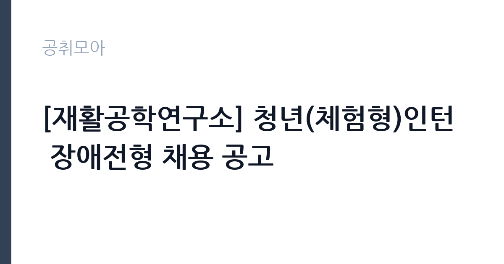

[공공기관] [재활공학연구소] 청년(체험형)인턴 장애전형 채용 공고
근로복지공단 · 인천 · 마감 2026-11-04 (D-7) · 출처 잡알리오

한눈에 보는 모집 조건
| 기관 | 근로복지공단 |
|---|---|
| 공고명 | [재활공학연구소] 청년(체험형)인턴 장애전형 채용 공고 |
| 고용형태 | 청년인턴(체험형) |
| 근무지 | 인천 |
| 게시일 | 2026-10-28 |
| 마감일 | 2026-11-04 (D-7) |
지원자격, 이렇게 읽으세요
- 이후 우리공단 청년(체험형)인턴으로 근무한 경험이 없는 자
- 임용예정일 즉시 근무가 가능한 자
- 학력 및 경력 제한 없음
체험형 인턴은 취업 준비생에게 직무 경험을 제공하는 단기 채용입니다. 근무 기간이 3개월에서 6개월로 정해져 있고 인턴료가 지급됩니다. 기관에 따라 수료증 발급이나 채용 시 가점 같은 혜택이 붙습니다. 이번 공고는 근로복지공단에서 직접 진행하는 자체 전형으로, 응시자격과 제출서류는 공고문에 항목별로 제시됩니다. 작업치료 직무는 작업치료사 면허가 필수입니다. 면허 취득 예정자도 지원할 수 있는지, 졸업 예정자와 자격 취득 예정자의 인정 범위가 어떻게 다른지 공고문에서 먼저 확인해야 합니다. 경력자는 해당 분야 근무 연수와 담당했던 환자군을 증명서로 입증해야 합니다. 병원 규정상 정년(만 60세)을 넘으면 지원할 수 없고, 채용 후에는 결격사유 조회와 채용 신체검사가 이어집니다. 서류는 접수 마감 이후 보완이 되지 않으므로 자격 요건과 증빙 서류를 마감 전에 모두 갖춰야 합니다. 공고문에 명시된 우대 사항은 해당 여부를 확인해 증빙을 첨부해야 가점이 반영됩니다. 동일 직무 경력자와 경쟁하게 되므로, 관련 경험이 있다면 증명서에 업무 내용이 구체적으로 적히도록 요청하십시오. 이 공고 원문에 적힌 응시 조건 문구는 '학력 및 경력 제한 없음'입니다. 문구를 그대로 읽고 본인 해당 여부를 하나씩 표시해 두면 서류 단계에서 탈락하는 일을 줄일 수 있습니다.
이 공고의 포인트
이 공고의 첫 번째 포인트는 고용 형태입니다. 짧은 기간이지만 직무 경험과 수료 실적을 쌓을 수 있고, 기관에 따라 채용 시 가점이 붙습니다. 두 번째는 업무 범위가 명확하다는 점입니다. 작업치료 직무로 채용되므로 배치 이후 담당 업무가 크게 흔들리지 않습니다. 세 번째는 근무지입니다. 인천 지역 근무로 접근성은 좋지만 그만큼 지원자가 몰리는 지역이므로 경쟁률을 넉넉히 잡아야 합니다. 직무 특성이 분명해 본인의 경험과 맞는지 빠르게 판단할 수 있습니다. 같은 직무 공고 중에서는 접수 마감이 가장 빨라 일정을 앞당겨 잡아야 합니다. 선발 인원은 공고문에 명시되어 있으니 모집분야 항목을 함께 확인하십시오.
전형은 어떻게 진행되나
전형은 서류심사와 면접심사를 기본으로 하고 직무에 따라 필기나 실기, 체력검정이 추가됩니다. 서류 단계에서는 응시자격 충족 여부와 제출서류 형식을 확인하며 이 단계에서 탈락하는 지원자가 적지 않습니다. 면접은 직무 이해도와 경험을 확인하는 방식으로 진행되고 발표는 개별 통보나 홈페이지 게시로 이뤄집니다. 최종합격 이후에는 결격사유 조회와 채용 신체검사가 이어지며 이 절차에서 문제가 확인되면 합격이 취소될 수 있습니다. 구체적인 전형 단계와 배점은 공고문에 표로 정리되어 있으니 원문을 기준으로 준비하십시오. 응시 수수료가 있는 경우 환불 기준과 기한이 정해져 있으니 접수 전에 확인하십시오.
원문에서 확인한 전형 방식
ㅇ 「장애인고용촉진 및 직업재활법 시행령」제3조에 따른 장애인 ㅇ 『청년고용촉진 특별법 시행령』에 따라 원서접수 마감일 기준 15세 이상 34세 이하인 자 - 군 전역자(사회복무요원 포함)는 『제대군인지원에 관한 법률』 제16조에 따라 응시연령 상한을 다음과 같이 연장(1년 미만 1세, 1년 이상 2년 미만 2세, 2년 이상 3세) ㅇ ’25. 1. 1. 이후 우리공단 청년(체험형)인턴으로 근무한 경험이 없는 자 ㅇ 임용예정일 즉시 근무가 가능한 자 - 임용일은 공단 사정에 따라 변경될 수 있음 ㅇ 학력 및 경력 제한 없음
이런 분께 추천해요
- 작업치료사 면허를 보유한 분
- 평가 기록과 재활 회의 참여 경험이 있는 분
- 계약 기간 동안 환자 치료의 연속성을 지킬 수 있는 분
지원 전 체크리스트
- 응시자격 요건과 경력 기준을 충족하는가 — 경력은 증명서로 입증해야 합니다
- 인턴 기간과 수료 요건, 지원 자격 전형을 확인했는가
- 제출서류 목록을 모두 준비했는가 — 누락 시 서류 단계에서 탈락합니다
- 접수 마감 2026-11-04 이전에 접수 방식을 확인해 제출했는가
모집 일정과 제출 타이밍
공고 게시일은 2026-10-28, 접수 마감은 2026-11-04입니다. 준비 기간은 약 7일로 서류 준비와 자격 증빙을 함께 처리하기에는 넉넉하지 않은 편입니다. 첫 이틀 안에 공고문과 첨부 서식을 내려받아 요건을 확인하고 남은 기간에 증빙 서류를 발급받는 일정이 현실적입니다. 면접은 서류 합격자 발표 후 짧은 간격으로 진행되는 경우가 많으므로 서류 제출과 동시에 면접 준비를 시작하는 편이 안전합니다. 마감일에는 접수 시스템이 몰리므로 하루 전까지 제출을 마치는 것이 좋습니다. 접수 첫날에 몰리면 시스템 접속이 지연될 수 있으므로 오전 시간대 제출이 안전합니다. 인천 근무지는 지역 내 이동 거리가 길어 출퇴근 시간이 생각보다 많이 걸릴 수 있습니다. 마감까지 일주일 안팎이 남아 서류 준비와 증빙 발급을 병행해야 합니다. 선발 인원은 공고문의 모집분야 항목에 직종별로 제시되어 있습니다.
직무 이해하기: 공공기관
공공기관은 도로와 수자원, 농지, 부동산 시장 관리 같은 공적 기능을 수행합니다. 현장 사업소는 도로와 시설 유지 관리, 조경과 환경 관리 업무를 직접 수행하며 계절 사업에 따라 기간제 인력을 채용합니다. 작업치료 업무는 환자가 일상생활 동작과 사회 복귀를 되찾도록 평가하고 훈련을 설계하는 일입니다. 근력·관절 가동 범위·인지 기능을 평가해 치료 목표를 세우고, 일상생활 동작 훈련과 인지 재활, 보조기 착용 훈련을 진행합니다. 진료과 의사·간호·사회복지 인력과 함께 회진과 재활 회의에 참여하고, 치료 기록과 평가지를 매 세션마다 남깁니다. 국비계약직은 국가 지원 사업의 인건비로 채용되는 경우가 많아 사업 기간과 인건비 기준이 계약서에 명시됩니다. 환자 이동과 보조가 필요해 허리와 어깨 부담이 따르는 직무입니다. 업무는 혼자 처리하기보다 부서 단위로 나눠 진행되므로 담당 구역과 협업 범위를 입사 초에 확인하는 것이 중요합니다. 업무 매뉴얼과 지침이 문서로 정리되어 있어 절차를 익히면 반복 업무는 빠르게 손에 붙습니다.
자기소개서 작성 팁
지원서는 평가-계획-중재-재평가의 흐름으로 경험을 정리하면 읽기 쉽습니다. 담당했던 환자 수와 진단군, 적용한 치료 기법, 기능 개선 결과를 수치로 제시하십시오. 국비 사업 직무라면 사업 목표와 본인 경험을 연결하는 문단이 필요합니다. 짧은 계약 기간이라도 기록과 인수인계를 철저히 하겠다는 태도를 밝히면 신뢰를 얻습니다. 문항별 글자 수 제한을 먼저 확인하고, 각 문항의 첫 문장에 결론을 배치하는 방식이 읽기 쉽습니다. 지원 동기는 기관의 어떤 사업에 기여하겠다는 한 문장으로 시작하고, 이어서 본인의 경험을 근거로 붙이십시오. 감점을 피하려면 다른 기관에 보낼 수 있는 범용 문장을 그대로 쓰지 않는 것이 중요합니다. 기관 이름과 사업명이 문장 안에 자연스럽게 들어가야 준비도가 드러납니다.
면접 준비 포인트
면접에서는 평가와 치료 계획 수립 과정을 구체적으로 묻습니다. 같은 진단이라도 환자 상태에 따라 목표를 어떻게 다르게 세우는지, 치료에 반응하지 않을 때 무엇을 바꾸는지 답해야 합니다. 다른 직종과 협업한 경험, 보호자에게 치료 계획을 설명한 경험도 자주 질문합니다. 국비계약직은 사업 기간이 정해져 있으므로 근무 기간 동안의 목표를 함께 제시하면 준비도가 드러납니다. 답변은 상황, 판단, 조치의 순서로 정리하면 전달이 분명해집니다. 모르는 질문에는 모른다고 밝히고 확인 방법을 제시하는 편이 억지 답변보다 낫습니다. 마지막에는 근무 의사와 함께 2026-11-04 이후 일정에 언제든 응할 수 있다는 점을 전달하십시오. 면접 당일 신분증과 제출서류 원본을 요구하는 경우가 있으니 공고문의 준비물 목록을 확인하십시오.
급여·근무조건 읽는 법
알리오(공공기관 경영정보 공개시스템) 2025년 결산 경영공시 기준으로 근로복지공단 일반정규직 1인당 평균보수액은 6,828만원, 공시된 신입사원 초임은 3,664만원입니다. 평균보수액은 기본급에 고정수당·실적수당·성과상여금·급여성 복리후생비를 모두 합산한 값이라 월 기본급만 보고 판단하면 실제와 크게 어긋납니다. 체험형 인턴은 정규직 보수 체계가 아니라 별도 인턴료 기준을 적용받습니다. 국비계약직 보수는 사업 인건비 기준과 병원 임금 규정을 함께 적용받는 경우가 많아 동일 직종의 정규직과 차이가 날 수 있습니다. 계약서에 월 급여와 수당 항목, 계약 기간이 명시되므로 총액을 기준으로 비교해야 합니다. 2026년 적용 최저임금은 시급 10,320원, 월 환산 2,156,880원(주 40시간·209시간 기준)입니다. 고용노동부 고시 제2025-47호로 확정된 금액입니다. 공고문에 금액이 제시되지 않은 항목은 원문 보수표나 처우 설명에서 확인해야 하며 확인되지 않은 수치는 쓰지 않는 것이 원칙입니다. 비교할 때는 월 급여뿐 아니라 상여·명절휴가비·복지포인트·초과근무수당까지 포함한 연간 총액으로 계산하십시오. 기간제라면 계약 기간 동안의 총액을, 무기계약이라면 호봉 상승과 정년까지의 누적 소득을 기준으로 판단하는 편이 정확합니다.
자주 묻는 질문
- 선발 인원은 몇 명인가요?
공고문의 모집분야 항목에 직종별 인원이 표로 제시되어 있습니다. 첨부된 공고문 원문에서 확인하십시오. - 근무지는 어디인가요?
인천 지역의 근로복지공단 소속 근무지입니다. 세부 주소와 출퇴근 조건은 원문 공고문에서 확인할 수 있습니다. - 보수는 얼마인가요?
채용 신분(체험형 인턴)과 기관 임금 규정에 따라 정해지며 구체적인 금액은 공고문 처우 항목에 제시됩니다. 금액이 공개되지 않은 경우에는 원문의 보수표를 확인하십시오.
함께 보면 좋은 공고
[공공기관] 2026년 제2차 국외소재문화유산재단 직원 채용(6급, 임시계약직 사업A/사업B) — 마감 2026-11-09[공공기관] 한국농어촌공사 금강사업단(보훈/장애제한경쟁) 공무직(청소원) 채용 — 마감 2026-11-13[공공기관] 분당서울대학교병원 진료교수요원(핵의학과) 채용공고 — 마감 2026-11-09출처: 잡알리오 공개정보를 바탕으로 공취모아가 정리한 안내글입니다. 모집 조건·일정은 변경될 수 있으니 지원 전 반드시 원문 공고문을 확인하세요. 본 글은 정보 제공용이며 합격을 보장하지 않습니다.